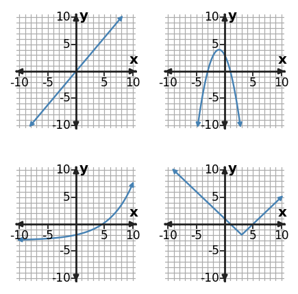

Algebra Practice 8.1 :::: Set 2
1. Choose the most appropriate function family for the table and support the choice with a difference pattern.
| $x$ | -2 | -1 | 0 | 1 | 2 |
|---|---|---|---|---|---|
| $y$ | 9 | 4 | 1 | 0 | 1 |
2. Choose the most appropriate function family for the table and support the choice with a ratio pattern.
| $x$ | 0 | 1 | 2 | 3 |
|---|---|---|---|---|
| $y$ | 2 | 8 | 32 | 128 |
3. Classify $y=-2x^2+5$ as linear, quadratic, or exponential. Name one structural clue in the equation.
4. A savings account balance increases by 25 dollars each week because the same amount is deposited. Choose a linear, quadratic, or exponential model and name the behavior that supports your choice.
5. The panel shows four familiar function families. Identify the family in the bottom-right panel and name a visible feature that supports your answer.

6. The points $(0,0),(1,4),(2,8),(3,12)$ suggest a linear model. A new point $(4,20)$ is measured. Is the original linear model still an exact model? Explain using the pattern of change.
7. A table has first differences $1,5,9,13$. A student says the relation is linear because the differences follow a regular pattern. Identify the better model family and the decisive pattern.
8. A population-style model is $P(t)=600(1.04)^t$, where $t$ is years after 2018. Explain why using the model for $t=-40$ requires caution even though the equation produces a value. State a reasonable domain limitation.
9. Use first differences, second differences, or ratios to decide which model family best fits the table.
| $x$ | 0 | 1 | 2 | 3 | 4 |
|---|---|---|---|---|---|
| $y$ | 2 | 3 | 6 | 11 | 18 |
10. Use the table to choose a linear, quadratic, or exponential model. State the numerical evidence that supports your choice.
| $x$ | 0 | 1 | 2 | 3 | 4 |
|---|---|---|---|---|---|
| $y$ | 11 | 9 | 7 | 5 | 3 |
11. Choose the most appropriate function family for the table and support the choice with a difference pattern.
| $x$ | -2 | -1 | 0 | 1 | 2 |
|---|---|---|---|---|---|
| $y$ | 13 | 4 | 1 | 4 | 13 |
12. Choose the most appropriate function family for the table and support the choice with a ratio pattern.
| $x$ | 0 | 1 | 2 | 3 |
|---|---|---|---|---|
| $y$ | 8 | 4 | 2 | 1 |
13. Classify $y=-5x-9$ as linear, quadratic, or exponential. Name one structural clue in the equation.
14. A taxi fare increases by 2.50 dollars for every mile traveled after a fixed starting fee. Choose a model family and justify it.
15. The panel shows four familiar function families. Identify the family in the top-right panel and name a visible feature that supports your answer.

16. The points $(0,7),(1,5),(2,3),(3,1)$ suggest a linear model. A new point $(4,-4)$ is measured. Is the original linear model still exact? Explain.
17. A table has first differences $4,8,12,16$. A student says the relation must be exponential because the differences grow. Identify the better model family and the decisive pattern.
18. A population model is $P(t)=850(1.03)^t$, where $t$ is years after 2015 and the model was fit to recent data. Explain why using it for $t=80$ requires caution. Name one contextual assumption that may fail.
19. Relationship A is $y=3x-2$. Relationship B has values $(0,2),(1,6),(2,18),(3,54)$. Compare the two families and the way each changes.
20. Compare $y=(x+1)^2+6$ and $y=7(0.5)^x$. Which has a turning point, and which has a constant multiplicative rate?
21. Table A has outputs [2, 5, 8, 11]; Table B has outputs [4, 1, 0, 1]; Table C has outputs ['3', '9', '27', '81'] for consecutive integer inputs. Match A, B, and C to linear, quadratic, and exponential families and cite the pattern used.
22. For $x^2+x-12=0$, choose the most efficient method from factoring, completing the square, or the quadratic formula, then solve.
23. For $x^2+6x-7=0$, explain why completing the square is a reasonable method, then solve.
24. For this equation, explain why the quadratic formula is a reliable choice and give the exact solutions: $2x^2+x-5=0$ with the quadratic formula.